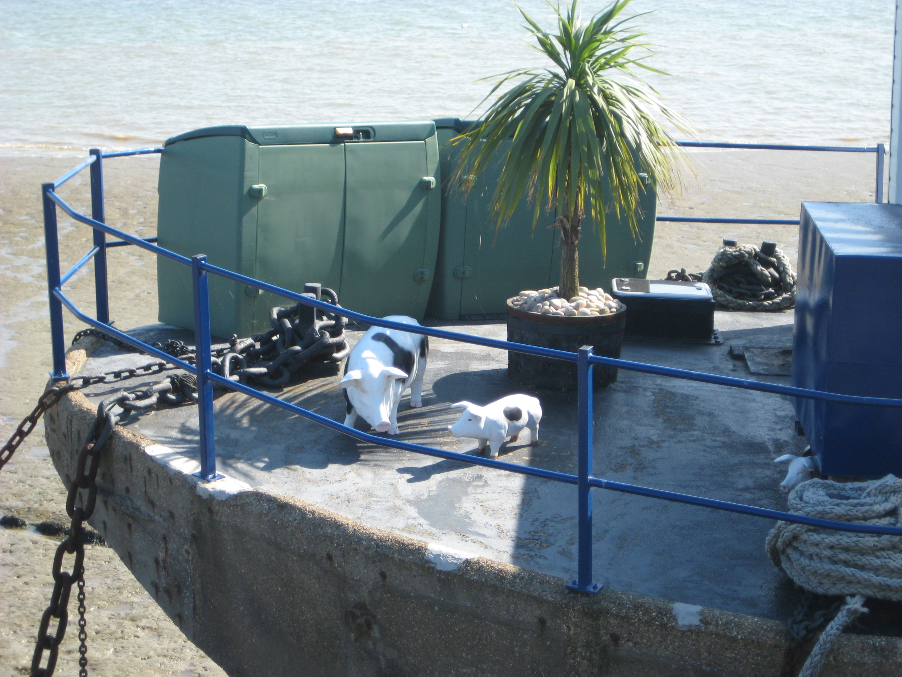

Sunday, August the 23rd, 2009
back to: title, date or indexes
Importantly, here are two pigs aboard a concrete boat moored in the mud at Burnham-on-Crouch. Readers will recall the town as one where Daniel Defoe reported the existence of fogwives. He had nothing to say of pigs and concrete boats, but it is unlikely, given the sunlight, that we are looking at mistpigs. Note the heavy chain tethering the concrete boat to the mud, to ensure it does not drift off into the River Crouch and cause maritime havoc.

Photograph courtesy of the Pansy Cradledew Maritime Concrete Latter-Day Daguerrotype Company Ltd.